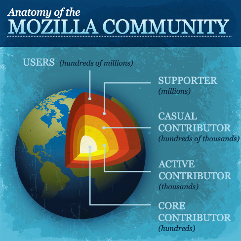

Tout sur

Mozilla Senegal Team, mmkmou@mozilla-senegal.org
Le projet Mozilla est une communauté mondiale de personnes qui pensent que l'ouverture, l'innovation et la saisie des chances qui nous sont offertes sont les clés de la vitalité d'Internet. Nous travaillons ensemble depuis 1998 pour nous assurer qu'Internet se développe d'une manière qui bénéficie à tout le monde.
Le 15 juillet 2003, l'organisation s'est officiellement déclaré comme étant une association sans but lucratif et est devenue la Fondation Mozilla (Mozilla Foundation) . La fondation est notamment à l'origine du navigateur web Firefox et du client de messagerie Thunderbird, parmi d'autres produits.
Le 3 août 2005, la Fondation Mozilla a annoncé la création d'une entreprise : la Mozilla Corporation, une filiale à non but lucratif. Cette dernière a pour principal objectif la diffusion de Firefox et de Mozilla auprès des utilisateurs finaux. Elle s'occupe également de la promotion et du partenariat des produits.

Les Mozilliens sont des personnes qui donnent de leur temps pour faire avancer la mission de Mozilla. Ils s'engagent dans la promotion de l'ouverture, de l'innovation et des possibilités sur le Web et forment le cœur de notre communauté.
Le programme Reps Mozilla fournit un cadre simple et des outils spécifiques pour aider les mozilliens bénévoles à devenir les représentants officiels de Mozilla dans leur région. Toute personne de 18 ans ou plus qui est passionné et compétent sur Mozilla et qui est prêt à plonger plus profondément dans le projet peuvent s'inscrire au programme.
Des étudiants créatifs et ingénieux, qui peuvent mener des campagnes et des projets au sein de leurs comunautés pour encourager les autres à contribuer à Mozilla et jouer un rôle important en aidant à améliorer l'expérience utilisateur sur le Web.


Notre processus d'assistance aux utilisateurs dépend de bénévoles passionnés tels que vous afin d'aider les utilisateurs à exploiter les nombreuses possibilités des logiciels Mozilla.
Devenir des superheroesLes tests d'assurance qualité sont l'un des moyens les plus faciles pour commencer avec Mozilla et est un excellent moyen de se familiariser avec notre plateforme.
Retrouvez tous les tests QALe Mozilla Developer Network est le centre d'information sur les technologies Mozilla. Aidez-nous à améliorer notre documentation en écrivant de nouveaux contenus, en corrigeant les documents existants ou en traduisant son contenu dans de nouvelles langues.
Comment aider dans MDNLes développeurs peuvent aider Mozilla en ajoutant de nouvelles fonctionnalités, en optimisant les performances de notre code et en facilitant le développement sur notre plateforme.
Tous posent des questions
Tout seul on répond
Yes
Moz I AM
Soyez social
Parlez de Mozilla autour de vous ! Racontez à votre entourage comment Firefox et les autres projets de Mozilla contribuent à un meilleur Internet.
Guide stratégie Marketing